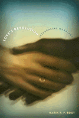

A contemporary snapshot of interracial marriage
A contemporary snapshot of interracial marriage


 A contemporary snapshot of interracial marriage
A contemporary snapshot of interracial marriage

|  |
Love's RevolutionInterracial MarriageMaria P. P. Rootpaper EAN: 978-1-56639-826-8 (ISBN: 1-56639-826-6) |
"In a time when race is much discussed yet less understood, Root's painstaking analysis of people who are challenging the meaning of race in America reads like a breath of fresh air. Through meticulous scholarship and an array of fascinating first-person narratives, Root provides one of the most comprehensive and insightful analyses of interracial marriage thus far. Love's Revolution makes a distinctive and important contribution to contemporary scholarship on race and ethnicity."
—Patricia Hill Collins, University of Cincinnati, author of Fighting Words: Black Women and the Search for Justice
When the Baby Boom generation was in college, the last miscegenation laws were declared unconstitutional, but interracial romances retained an aura of taboo. Since 1960 the number of mixed race marriages has doubled every decade. Today, the trend toward intermarriage continues, and the growing presence of interracial couples in the media, on college campuses, in the shopping malls and other public places draws little notice.
Love's Revolution traces the social changes that account for the growth of intermarriage as well as the lingering prejudices and false beliefs that oppress racially mixed families. For this book author Maria P.P. Root, a clinical psychologist, interviewed some 200 people from a wide spectrum of racial and ethnic backgrounds. Speaking out about their views and experiences, these partners, family members, and children of mixed race marriages confirm that the barriers are gradually eroding; but they also testify to the heartache caused by family opposition and disapproving strangers.
Root traces race prejudice to the various institutions that were structured to maintain white privilege, but the heart of the book is her analysis of what happens when people of different races decide to marry. Developing an analogy between families and types of businesses, she shows how both positive and negative reactions to such marriages are largely a matter of shared concepts of family rather than individual feelings about race. She probes into the identity issues that multiracial children confront and draws on her clinical experience to offer child-rearing recommendations for multiracial families. Root's "Bill of Rights for Racially Mixed People" is a document that at once empowers multiracial people and educates those who ominously ask, "What about the children?"
Love's Revolution paints an optimistic but not idealized picture of contemporary relationships. The "Ten Truths about Interracial Marriage" that close the book acknowledge that mixed race couples experience the same stresses as everyone else in addition to those arising from other people's prejudice or curiosity. Their divorce rates are only slightly higher than those of single race couples, which suggests that their success or failure at marriage is not necessarily a racial issue. And that is a revolutionary idea!
Excerpt available at www.temple.edu/tempress
"Maria Root's Love's Revolution provides a frank examination of the challenges that racial intermarriage entails. At the same time it offers insights into the transformative power of love on the individuals in these relationships and points to the revolutionary potential this transformation holds for re-envisioning the pursuit of a more equitable society."
—G. Reginald Daniel, Department of Sociology, University of California, Santa Barbara
"This is the most valuable, practical book available on interracial marriage. Maria Root has done the reading public a service in writing Love's Revolution. It is a careful, social and psychological study of the growing phenomenon of interracial marriage. Her writing is open and accessible.... She examines ideas about factors that have been thought to encourage or discourage interracial marriages, to make them more or less successful than other sorts of marriages. All of this with scholarly integrity and humane wisdom."
—Paul Spickard, Professor of History and Asian American Studies at the University of California, Santa Barbara, and the author of Mixed Blood: Intermarriage and Ethnic Identity in 20th-Century America and co-editor of We Are a People (Temple)
"Maria Root has given us extraordinary insight into the social and historical forces that both strain and strengthen interracial marriages. In remarkably revealing interviews with wives and husbands, as well as their families and friends, she documents the complexity of life 'on exhibit' and the abiding power of love."
—M. Belinda Tucker, Professor of Psychiatry & Biobehavioral Sciences, University of California, Los Angeles, and author of The Decline of Marriage Among African Americans
"A practical guide to meeting the challenges that sometimes arise in interracial marriage."
—Seattle Times
"Maria Root's writing is clear and accessible. She presents an overview not available elsewhere, and she utilizes an effective systems-organizational theory model that is very helpful in presenting reasons why some families embrace interracial marriages while other reject it. Her book addresses many complex issues in a truly scholarly style and it is based on strong empirical research and careful documentation."
—Journal of Sociology and Social Welfare
"This book can help us understand the reasons why persons of different races and opposing cultures choose to marry in spite of the stereotypes that can negatively influence the success of their marriage and the objective problems that mixed couples encounter...Thank to the engaging life stories that [Root] reports, the book is pleasant to read without being 'light'."
—The Journal for the Study of Marriage and Spirituality
Acknowledgments
1. Love and Revolution
2. Love and Fear
3. Sex, Race, and Love
4. The Business of Families
5. Open and Closed Families
6. The Life Cycle and Interracial Marriage
7. Parents, Children, and Race
8. Ten Truths of Interracial Marriage
Appendix
Notes
References
Index
 | Maria P. P. Root, Ph.D., is a clinical psychologist and past President of the Washington State Psychological Association. |
Race and Ethnicity
Psychology
African American Studies
© 2015 Temple University. All Rights Reserved. This page: http://www.temple.edu/tempress/titles/1435_reg.html.